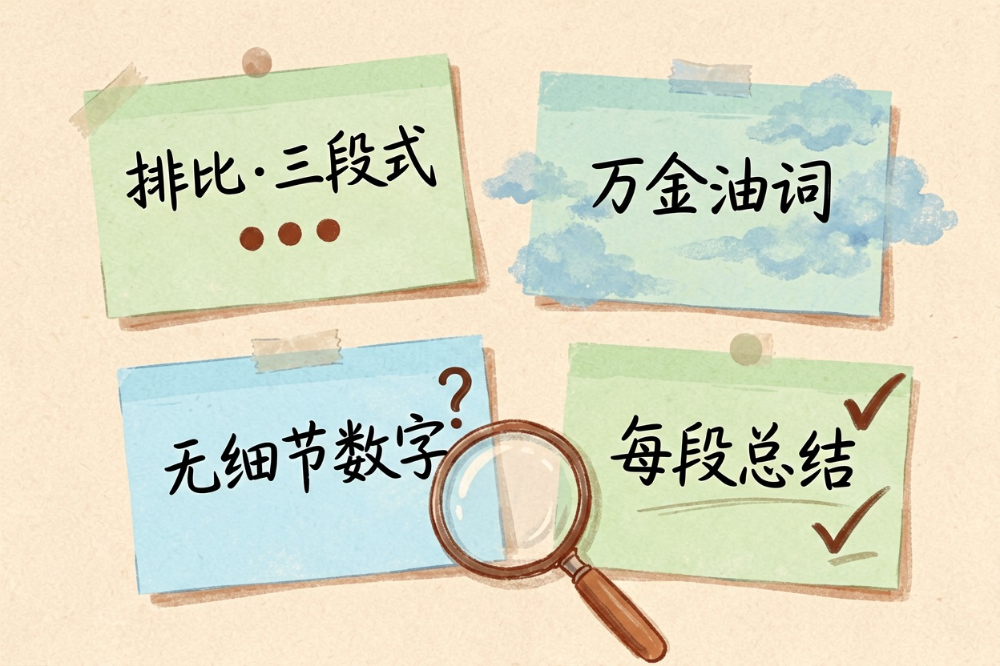
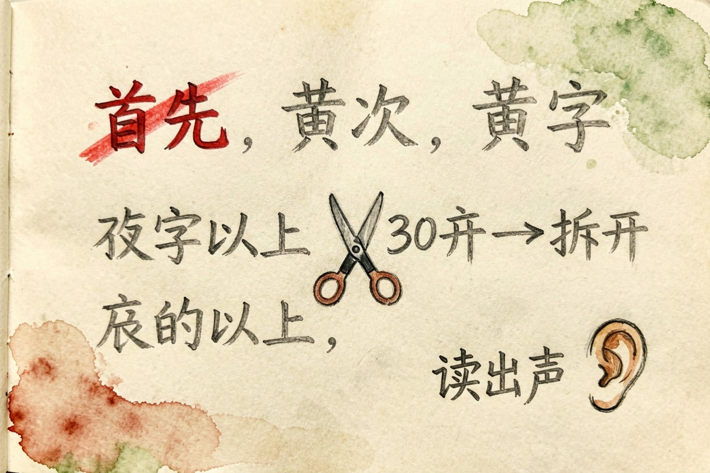
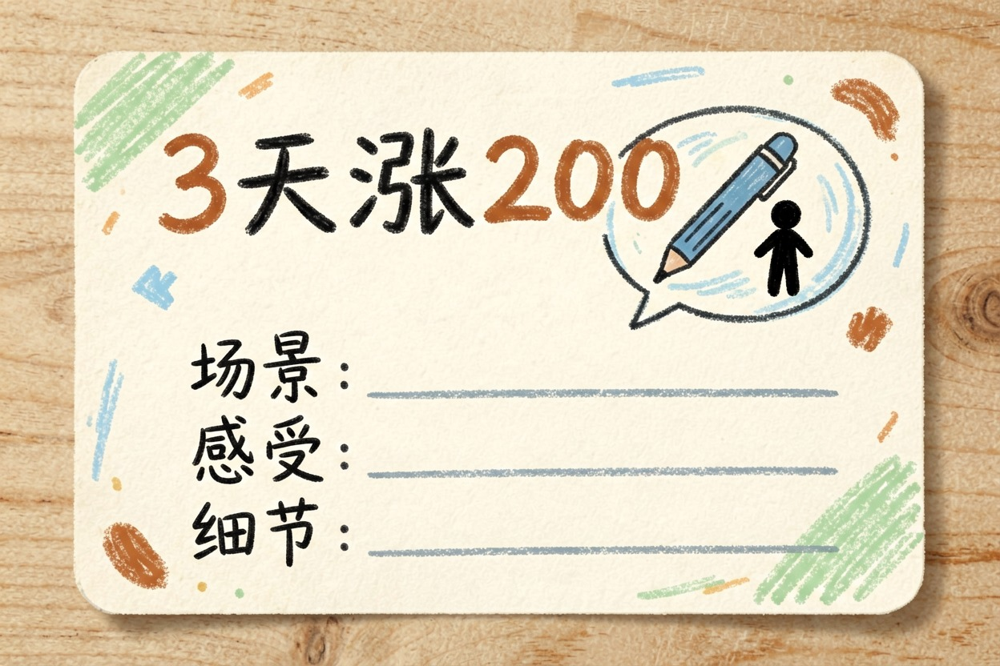
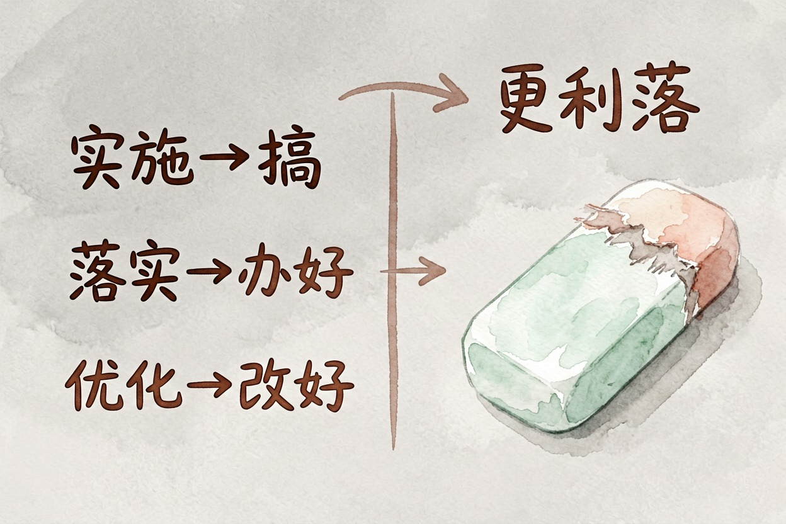
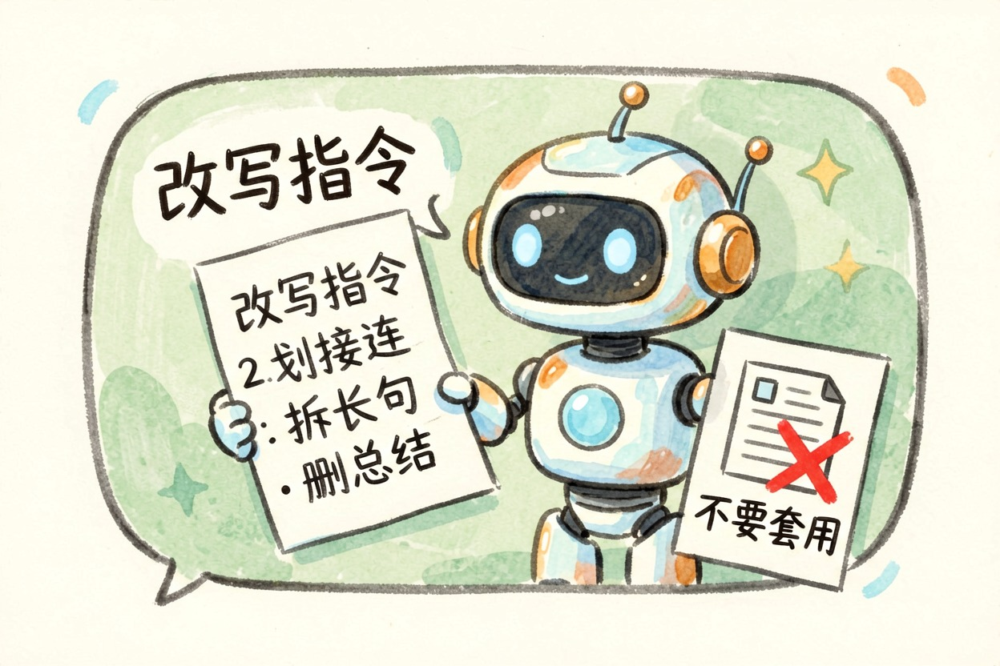

AI 味太重怎么改？六个去味技巧和改写指令
AI 写的东西一眼就能看出是机器写的，因为排比泛滥、万金油话多、缺少细节、每段总结，这是四个具体特征。
AI 味太重怎么改？先认出四个特征

AI 味太重怎么改，答案不是玄学——它有四个很具体的特征。认出哪条中招，就知道从哪下手改。排比和三段式泛滥——「首先…其次…最后…」「随着…的发展」「在当今社会」，这些结构 AI 最爱用，人类读起来像机器。万金油表述——没有具体信息量的通用句，什么场景都能套，但什么场景都不痛不痒。没有具体细节和数字——「效果显著」「广受好评」「深受欢迎」，全是形容词，没有一件事实。每段都要总结一下——AI 的习惯是每段末尾总结一句，读起来像教科书。
诊断先于治疗。认出 AI 味的四个特征，你就知道改什么、怎么改。
技巧 1-2：删连接词、拆长句

「首先」「其次」「综上所述」「随着…的发展」，这些词在 AI 生成文本里大量出现，删掉大部分不影响语义。30 字以上的长句拆成两句，读起来更有节奏感。改写前：「AI 技术发展，越来越多的写作工具开始涌现，这些工具在提高效率的同时也带来了新的问题。」改写后：「AI 写作工具越来越多。效率高了，但问题也来了。」改完长句出声读一遍，读着喘不过气的地方继续拆。
技巧 3-4：加具体数字和个人细节

「效果显著」改成「三天涨了 200 个粉丝」。加一句只有你会写的细节——你当时在什么场景下做的、你看到了什么、你什么感受。这些细节 AI 编不出来，只有真正做过的人才能写。这两条是去 AI 味最有效的方法，能立刻把文字从「像 AI 写的」变成「像人写的」。
技巧 5-6：换口语词、砍掉总结段

「实施」改成「搞」，「落实」改成「办好」，「优化」改成「改好」。把书面词换成日常说法，整段话的味道就变了。另外，AI 每段末尾都要总结一句，读完删掉那些总结，文字会更利落。大多数情况下，删掉不影响任何信息量。
让 AI 自己去味 + 什么时候不用改

如果你不想自己动手改，也可以让 AI 自己改自己，把去味指令发给它即可。但注意，AI 不擅长识别自己写的哪些部分有 AI 味，因为那些结构对它来说是最自然的。
把下面这段指令发给 AI，它能帮你改掉大部分 AI 味：
请把下面这段话改得更像真人写的，要求：
1) 删掉「首先/其次/综上所述/随着…的发展」这类连接词和套话；
2) 超过 30 字的长句拆开；
3) 把笼统评价换成具体描述，没有依据的评价直接删掉；
4) 去掉结尾的总结段；
5) 保持原意和事实不变，不要添加我没说过的信息。
原文：【粘贴】但注意，这套方法针对中文自媒体、日常沟通、商业文案。公文、学术论文、法律文本反而需要那种规整感，不要套用。AI 味太重怎么改，认出特征，用对方法，就能改好。去味不等于去错误，内容本身还是要核实。
最后说一句反的：去味不等于去错误。 改完读着像人写的，不代表内容对——事实、数字、引用仍要单独核一遍。另外，如果你自己也没读过、没做过，改得再像人写的也会被看穿。
工具价格与免费额度可能变动，实际以各工具官网当前说明为准。 AI 味太重怎么改，认出特征，用对方法，就能改好。 !尾图核心要点回顾
{kind=link}
本文信息核对于 2026-08-05。AI 产品的价格、免费额度与功能变动频繁，实际以各工具官网当前说明为准。